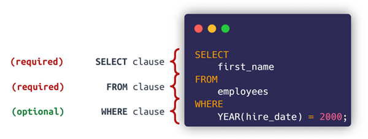
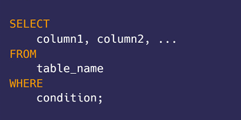

2. Hệ quản trị dữ liệu
2.1 SQL là gì?
SQL là từ viết tắt của Structured Query Language và được sử dụng rộng rãi để truy vấn và xử lý dữ liệu trong một database.
Các tác vụ mà SQL hỗ trợ:
- Thêm dòng, cập nhật giá trị hoặc xóa các bản ghi trong một database
- Tạo bảng mới, database mới
- Truy vấn dữ liệu từ database
Việc sử dụng thành thạo SQL là một trong những yêu cầu bắt buộc của nhân sự ngành data. Sử dụng SQL, các nhà phân tích dữ liệu có thể truy cập, xử lý, phân tích và đưa ra các insight từ các dữ liệu được cung cấp.
2.2 Cấu trúc ngôn ngữ SQL
SQL là ngôn ngữ có tính chất khai báo – tức bạn cần chỉ ra WHAT YOU WANT, thay vì HOW YOU WANT (giống như các ngôn ngữ mệnh lệnh như Java, C++). Do đó, nó rất gần với ngôn ngữ tự nhiên.
Cú pháp của SQL sẽ bắt đầu bằng một Động từ thể hiện hành động muốn thực hiện (chẳng hạn: SELECT, INSERT, UPDATE hoặc DELETE).
Theo sau Động từ sẽ là Chủ ngữ (tên bảng muốn xử lý) và Vị ngữ (chẳng hạn: các cột cần lấy, các giá trị cần chèn hoặc cập nhật…).
Trong SQL, để câu lệnh có thể thực thi thành công, cần đảm bảo có 2 mệnh đề bắt buộc là SELECT và FROM. Các mệnh đề khác đều là các mệnh đề tùy chọn.
SELECT
Câu lệnh SELECT sẽ chọn ra các cột từ 1 hoặc nhiều bảng, ví dụ:
SELECT customer_name, address FROM customer
Trong câu lệnh trên, hàm SELECT được sử dụng để lấy ra 2 cột customer_name và cột address từ bảng customer.
Trường hợp muốn lấy tất cả các cột trong bảng, ta có thể dùng ký hiệu *, ví dụ:
SELECT * FROM customer
WHERE
Để lọc ra các dòng thỏa mãn các điều kiện cụ thể từ một bảng, chúng ta sử dụng WHERE trong câu lệnh SELECT.
Cú pháp của câu lệnh với WHERE như sau:
